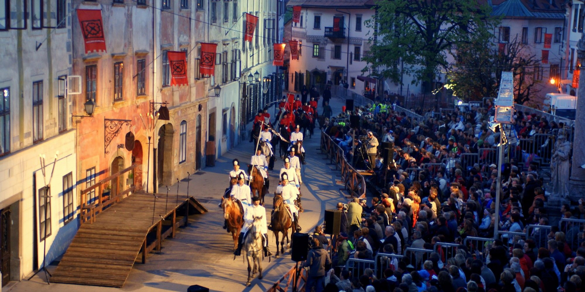

Škofjeloški pasijon je najstarejše ohranjeno dramsko besedilo zapisano v slovenskem jeziku z dodatki v latinskem in nemškem jeziku in z režijskimi opombami. Je eden od največjih dosežkov slovenskega slovstva v dobi baroka. Velja tudi za edino, v celoti ohranjeno, režijsko pasijonsko knjigo v Evropi iz začetka 18. stoletja.
Več: https://www.pasijon.si/
Pasijonski veter je gibanje, ki povezuje slovenske pasijonce v Sloveniji, zamejstvu in po svetu. Povezuje jih ljubezen do pasijona, s sedežem v Kapucinskem samostanu v Škofji Loki. Pasijonski veter želi povezati vse pasijonce po srcu in duši širom Slovenije ter negovati duhovno bogastvo in sporočilnost pasijona in odrešenja.
Več: https://www.pasijonskiveter.si/